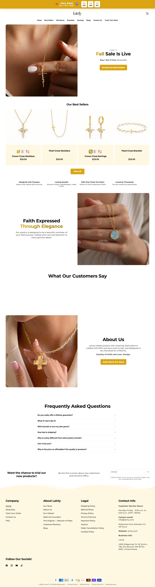
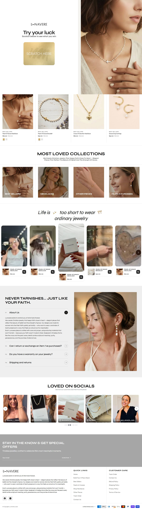
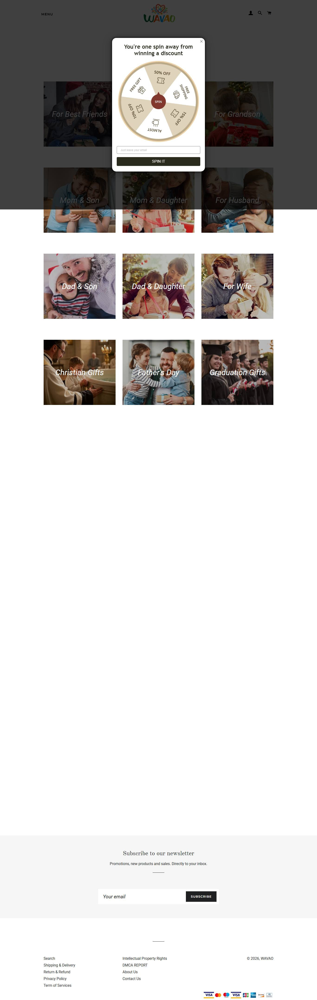
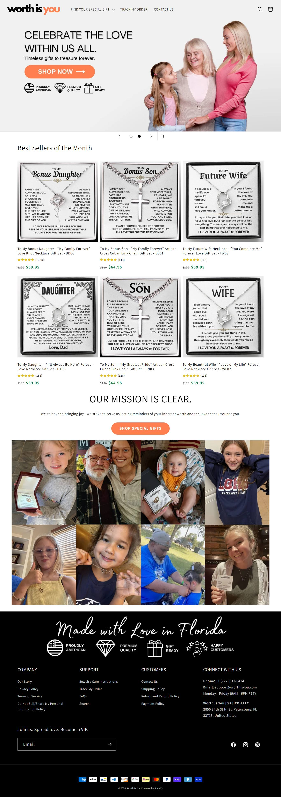
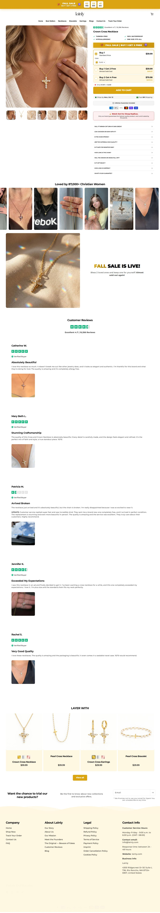
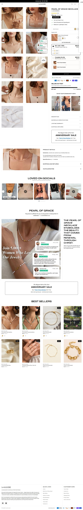
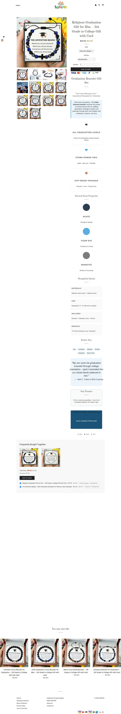
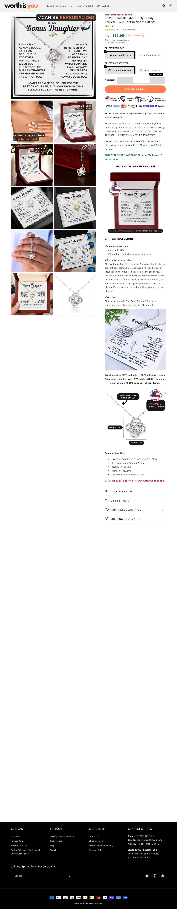

Comparando home e página de produto das 4 lojas com mais anúncios ativos (Lainly, Wavao, Lunavere, Worth Is You), a Given in Grace pega o cartão da Worth Is You e da Sugar Spring, a cruz da Lainly e da Lunavere, as ocasiões da Wavao, e acrescenta o que nenhuma tem: o prazo da próxima data na dobra.
15 prints reais (Playwright)mockups desktop 1280 e celular 390
01Por que estas 4
447
Lainly: anúncios ativos
estável/crescendo
observado
190
Lunavere: anúncios ativos
crescendo
observado
176
Wavao: anúncios ativos
em teste
observado
47
Worth Is You: anúncios ativos
crescendo
observado
Critério: as 4 lojas com mais anúncios ativos. A Sugar Spring (40 ativos) fica fora do comparativo visual, mas é a referência da PDP de presente (print na ficha dela).
02Home · desktop
LainlyMODELAR

Lainlycopiar: "she'll never forget it" + FAQ sob o botãoevitar: prazo de 9 a 20 dias
LunavereMODELAR

Lunaverecopiar: depoimento "vi na igreja"evitar: depender de vídeo em 1ª pessoa no começo
WavaoMODELAR

Wavaocopiar: ocasiões de fé com cartãoevitar: 250 produtos a $21
Worth Is YouMODELAR

Worth Is Youcopiar: cruz para o neto com cartãoevitar: alegar "Made in USA" sem ser
Nossa Given in Graceblueprint
Cartão + fé + datamelhoria: cartão como foto 1, versículo, order-by na dobra
03Home · celular
LainlyMODELAR
Lainlycopiar: "she'll never forget it" + FAQ sob o botãoevitar: prazo de 9 a 20 dias
LunavereMODELAR
Lunaverecopiar: depoimento "vi na igreja"evitar: depender de vídeo em 1ª pessoa no começo
WavaoMODELAR
Wavaocopiar: ocasiões de fé com cartãoevitar: 250 produtos a $21
Worth Is YouMODELAR
Worth Is Youcopiar: cruz para o neto com cartãoevitar: alegar "Made in USA" sem ser
Nossa Given in Graceblueprint
Cartão + fé + datamelhoria: cartão como foto 1, versículo, order-by na dobra
Os prints foram capturados em 1366px; no celular, veja a moldura do blueprint (390px reais).
04Página de produto · desktop
LainlyMODELAR

Lainlycopiar: "she'll never forget it" + FAQ sob o botãoevitar: prazo de 9 a 20 dias
LunavereMODELAR

Lunaverecopiar: depoimento "vi na igreja"evitar: depender de vídeo em 1ª pessoa no começo
WavaoMODELAR

Wavaocopiar: ocasiões de fé com cartãoevitar: 250 produtos a $21
Worth Is YouMODELAR

Worth Is Youcopiar: cruz para o neto com cartãoevitar: alegar "Made in USA" sem ser
Nossa Given in Graceblueprint
Cartão + fé + datamelhoria: cartão como foto 1, versículo, order-by na dobra
05Página de produto · celular
LainlyMODELAR
Lainlycopiar: "she'll never forget it" + FAQ sob o botãoevitar: prazo de 9 a 20 dias
LunavereMODELAR
Lunaverecopiar: depoimento "vi na igreja"evitar: depender de vídeo em 1ª pessoa no começo
WavaoMODELAR
Wavaocopiar: ocasiões de fé com cartãoevitar: 250 produtos a $21
Worth Is YouMODELAR
Worth Is Youcopiar: cruz para o neto com cartãoevitar: alegar "Made in USA" sem ser
Nossa Given in Graceblueprint
Cartão + fé + datamelhoria: cartão como foto 1, versículo, order-by na dobra
06Leitura de design, oferta e UX inferido
Critério
Lainly
Lunavere
Wavao
Worth Is You
Nossa direção
Foto principal
colar no fundo branco
colar no pescoço
pulseira + cartão
cartão + caixa
cartão "To My Granddaughter" + cruz na caixa
Preço
$39,99 (3 por 1)
$60 de $120
$21,95 de $32,95
$59,95 a $64,95
$49,95 de $89,95
Bump
pulseira grátis
compre 1 leve 1
compre junto
não visto
caixa LED $14,95 pré-marcada
Prazo da data
não
não
não
não
"Order by Dec 10 for Christmas" na dobra
07Carregamento observado
Loja
Peso do print da home
Observação
Sugar Spring
695 KB
capturou sem erro
Worth Is You
559 KB
capturou sem erro
Wavao
226 KB
capturou sem erro
Lainly
328 KB
capturou sem erro
Lunavere
489 KB
capturou sem erro
É laboratório (Playwright, uma visita), não Core Web Vitals de campo. DCL, load e número de recursos não obtidoo prints.js não mede esses tempos.
08Auditoria de imagens
57
imagens de carrossel baixadas
observado
7
itens com referência
observado
6 a 17
faixa de imagens por PDP
observado
0
PDPs que juntam cartão de família + cruz feminina
a brecha
inferido
Produto
Concorrente
Carrossel real
Baixadas
Status
To My Granddaughter, Pearl Cross Gift Set
Sugar Spring
6
6
completo
To My Grandson, Cross Chain Gift Set
Worth Is You
7
7
completo
Goddaughter Baptism Cross Keepsake
Lainly
8
8
completo
To My Mom, Guardian Angel Necklace
Lunavere
17
12
amostrado
In Loving Memory, Angel Wing Cross
Wavao
14
12
amostrado
Mahogany Keepsake Box with LED Light (upgrade)
Sugar Spring
6
6
completo
One for You, One for Her: Matching Cross Bracelet
Lainly
6
6
completo
No formato de presente de família (Sugar Spring, Worth Is You, Wavao) a foto principal é o CARTÃO, não o colar: a pessoa compra as palavras. Nas lojas cristãs (Lainly, Lunavere) a foto principal é a joia no pescoço e não há cartão. Ninguém junta os dois: cartão de família com cruz/anjo e versículo, mostrado no momento em que o presente é aberto.
09Blueprint da sua loja monte a SUA assim
A planta visual da SUA loja: a home e a página de produto já desenhadas na identidade da marca Given in Grace, com a copy em inglês nos lugares certos. É o layout pra reproduzir no Shopify.
Como ler. Os blocos com fundo claro e um rótulo no canto (ex: "IMAGEM 1 · cartão + colar na caixa") são onde entram as imagens. Textos, botões, preço, caixa LED e o seletor de assinatura já estão no lugar final. A copy está em inglês, idioma do mercado.
1 · Layout desktop · Home à esquerda, página de produto à direita
Como as duas páginas ficam no computador. É o mesmo site: o que muda no celular é só o empilhamento dos blocos. Role dentro de cada janela pra ver a página inteira.
2 · Layout celular a prioridade: 90% do tráfego é mobile
É aqui que o layout tem que estar impecável. 9 em cada 10 clientes veem a loja assim, no celular. Desenhe pensando primeiro nesta tela; o desktop é a consequência.
A ordem dos blocos não é estética, é psicológica. Home: a data que vem aí (order-by) → "This says it all" → compre por relação (neta, neto, afilhada, mãe, luto) → o momento de abrir a caixa → avaliações. PDP: cartão como foto 1 → assinatura editável → preço ancorado → caixa LED pré-marcada → data de entrega → objeções (esverdeia? bebê pode usar? chega a tempo?) → botão fixo no celular.
10Validar
antes de construir
Fornecedor confirmado (cruz feminina + cartão editável + prazo dos EUA) e amostra aprovada.
antes de escalar
30 vendas com CPA ≤ $22 e nenhum pedido de Natal entregue depois do dia 24.
O blueprint melhora a chance de conversão, mas conversão só se mede com tráfego real.
Próxima ação
Montar home e PDP mobile-first conforme o blueprint